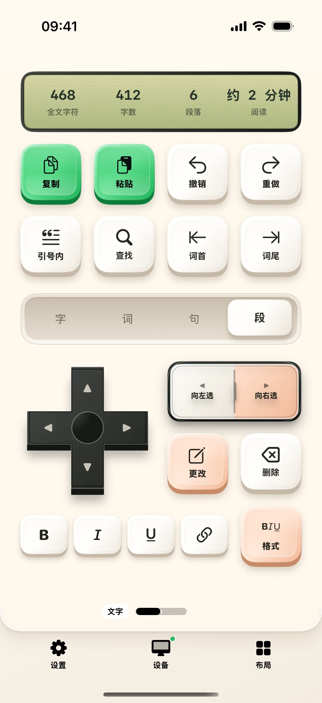
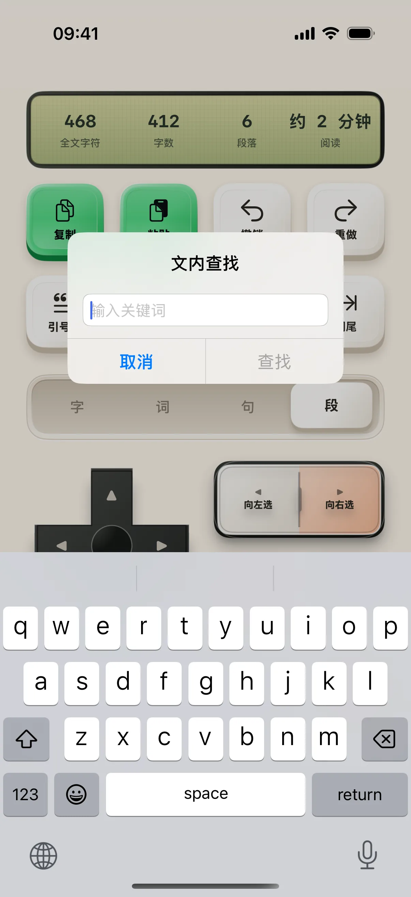
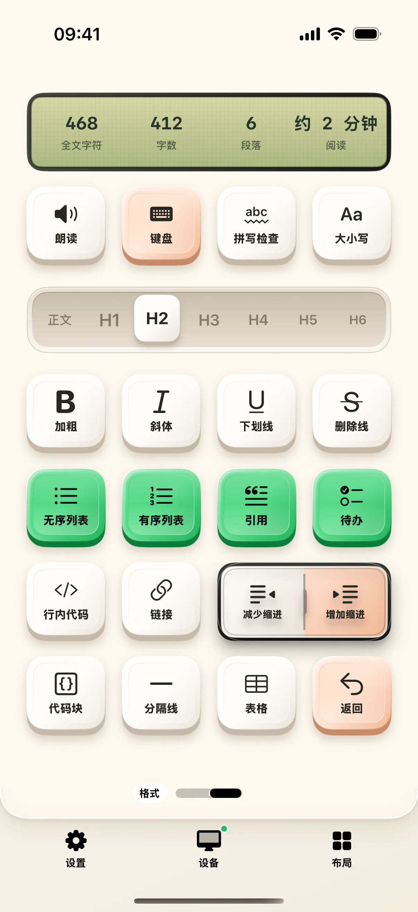

先在 Mac 上准备两段短文，再用手机改变移动范围、查找关键词，最后打开格式桌面。每次只做一个操作，才能分清手机选择的范围与 Mac 当前选区之间的关系。
开始前准备
- iPhone / iPad 安装奶猫妙控 1.2.0，Mac 安装同版本配套端；完成配对，并允许 Mac 端的辅助功能权限。需要电脑画面时，再开启屏幕录制权限。
- 在 Mac“文本编辑”新建练习文档，写两段文字：“今天先写提纲。”“明天补充例子。”把光标放进正文。Markdown 专有操作请在支持的编辑器中使用；Obsidian 的精确集成需要安装配套插件。
1. 进入写作，先看范围与选区
在 App 底部点“布局”，在列表中找到“写作”。布局较多时用搜索框搜索名称；有多个桌面的方案先点右侧箭头展开，再点桌面名称；搜索具体桌面名称也能找到它。选择写作桌面。小屏可显示编辑器提供的文本统计与当前状态，但这些信息是否完整取决于编辑器能否提供数据。
先在 Mac 放好光标；不要只看手机上的字数判断当前选中了什么。本文练习以 Mac 文档中可见的光标和选区为准。

2. 把范围切到“段”
在“字／词／句／段”范围条上点“段”。检查范围值变为“段”，两侧边界操作对应“段首”和“段尾”。
先点“段尾”，在 Mac 检查光标位置；再点“段首”，检查是否返回当前段落开头。只想移动一个字时，先把范围改回“字”，再使用方向控制，不必进入设置页。

3. 用“查找”定位一个已知词
点“查找”，出现“文内查找”弹窗。在输入框填“提纲”，点弹窗中的“查找”，然后在 Mac 检查匹配位置。
再次点“查找”可查看或修改查询词；结束这次查找时使用“结束查找”。取消弹窗不会清空记住的关键词，所以换文档后先检查输入框里的旧词。

4. 选定文字，再使用快捷格式
先在 Mac 选中“提纲”两个字，再点写作桌面的 B。它对应加粗；在支持富文本的文档中检查这两个字是否加粗，再按一次或撤销恢复。
如果文档是纯文本，字体样式可能不会保留。不要从按钮已经按下推断编辑器一定完成了格式变更；先确认文档模式和编辑器支持情况。
5. 打开“格式”桌面，选择合适操作
点写作桌面右下方通往格式桌面的按钮，看到加粗、斜体、下划线、链接及其他格式键。这里还有“正文／H1…H6”的标题范围控制。
Markdown 练习可用一份可丢弃的 Markdown 文件：把光标放到一行标题，选择 H2，再检查编辑器中的实际文本或标题层级。文本编辑器与 Markdown 编辑器的行为不同，先用一种格式核验，再继续其他操作。

6. 回到写作，保留当前工作位置
点格式桌面右下方的写作返回按钮，继续使用原来的范围。需要直接输入时，可在格式桌面点“键盘”，输入完成后点“完成”返回。
“删除”支持长按切换持续删除状态。刚开始熟悉范围时先不要开启它；若已开启，在进一步移动前先检查状态并关闭，避免把范围移动练习变成删除操作。
参考：下载配套集成与对应软件安装说明。
操作不符合预期时
手机显示了字数，为什么不能精确选择网页文本？
统计读取、文本选择与修改是不同能力。只读网页或未开放文本接口的区域不一定允许精确操作，先在可编辑正文验证。
Markdown 操作在 Obsidian 中没反应？
检查配套集成包中 Obsidian 目录的安装说明、插件是否启用，以及当前是否在可编辑笔记中。先确认普通输入正常，再验证标题、列表等专有命令。
本文按奶猫妙控 1.2.0 的界面与操作编写，更新于 2026 年 9 月 10 日。查看更新日志 · 连接与权限帮助。